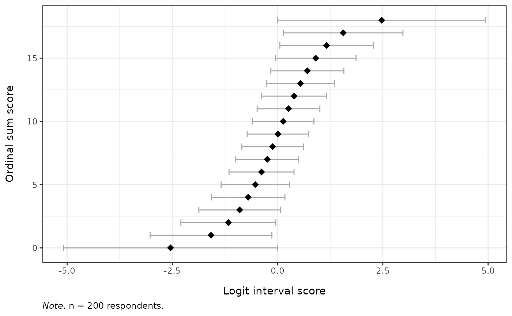

For a given set of items, returns the score-to-theta lookup that maps each possible raw sum score to a person-location estimate (in logits) and its standard error. Useful when reporting a scale's measurement properties or converting raw totals to interval-scaled scores for downstream analysis.
Usage
RMscoreSE(
data,
method = "WLE",
output = "kable",
ci_multiplier = 1.96,
point_size = 3,
error_width = 0.5,
theta_range = c(-10, 10)
)Arguments
- data
A data.frame or matrix of item responses. Items must be scored starting at 0 (non-negative integers). Missing values (
NA) are allowed; the underlying model fit handles them.- method
Character string. Either
"WLE"(default) for Warm's Weighted Likelihood Estimator computed from a CML-fitted Rasch / Partial Credit Model viapsychotools, or"EAP"for Expected A Posteriori sum-score estimates from an MML-fitted model viamirt.- output
Character string controlling the return value:
"kable"(default) for a formattedknitr::kable()table,"dataframe"for the underlying data.frame, or"ggplot"for aggplot2figure showing each raw score's logit estimate withci_multiplier-scaled error bars.- ci_multiplier
Numeric. Multiplier applied to the standard error to draw error bars on the figure. Default
1.96(\(\approx\)95% CI under a Gaussian approximation). Ignored whenoutput != "ggplot".- point_size
Numeric. Point size for the figure. Default
3.- error_width
Numeric. Cap width for error bars on the figure. Default
0.5.- theta_range
Numeric length 2. Theta search range used for boundary raw scores under WLE estimation. Default
c(-10, 10). Ignored whenmethod = "EAP".
Value
If
output = "kable": aknitr_kableobject with columns "Ordinal sum score", "Logit score", and "Logit std.error", and a caption noting the estimation method.If
output = "dataframe": a data.frame with columnsraw_score,logit_score, andlogit_se(one row per possible raw sum score from 0 to the theoretical maximum).If
output = "ggplot": aggplotobject — points at each (logit_score,raw_score) with horizontal error bars at ±ci_multiplier × logit_se.
Details
The function automatically detects whether the data is dichotomous (max score 1) or polytomous (max score > 1) and selects the appropriate Rasch / Partial Credit model.
method = "WLE" fits the model by CML with psychotools::pcmodel(),
centres the item thresholds to grand-mean-zero, and solves Warm's
weighted-likelihood equation for each raw score with the same engine used
by RMpersonParameters(); the two functions therefore report identical
locations and standard errors. Warm's bias correction yields finite
locations even at the minimum and maximum scores (only a root outside
theta_range is clamped to the boundary with NA SE). The reported
logit_se is the information-based standard error 1 / sqrt(I(theta)),
matching catR, TAM and most Rasch software.
method = "EAP" fits the model with mirt::mirt(..., itemtype = "Rasch") (MML) and obtains sum-score-based EAP estimates and posterior
SDs via mirt::fscores(method = "EAPsum", full.scores = FALSE, full.scores.SE = TRUE). EAP estimates are finite at all score boundaries
(the prior shrinks them inward), but they depend on the assumed normal
prior on theta. Item parameters from MML differ slightly from the CML
values used by the WLE path; for well-behaved data the difference is small.
References
Warm, T. A. (1989). Weighted likelihood estimation of ability in item response theory. Psychometrika, 54(3), 427-450. doi:10.1007/BF02294627
Bock, R. D., & Mislevy, R. J. (1982). Adaptive EAP estimation of ability in a microcomputer environment. Applied Psychological Measurement, 6(4), 431-444. doi:10.1177/014662168200600405
Examples
# \donttest{
set.seed(42)
sim_data <- as.data.frame(
matrix(sample(0:3, 200 * 6, replace = TRUE), nrow = 200, ncol = 6)
)
colnames(sim_data) <- paste0("Item", 1:6)
# Default kable output, WLE
RMscoreSE(sim_data)
#>
#>
#> Table: Person locations via Warm's WLE (CML item parameters). n = 200 respondents.
#>
#> | Ordinal sum score| Logit score| Logit std.error|
#> |-----------------:|-----------:|---------------:|
#> | 0| -2.543| 1.298|
#> | 1| -1.581| 0.738|
#> | 2| -1.170| 0.575|
#> | 3| -0.902| 0.494|
#> | 4| -0.699| 0.446|
#> | 5| -0.530| 0.415|
#> | 6| -0.381| 0.394|
#> | 7| -0.246| 0.381|
#> | 8| -0.117| 0.374|
#> | 9| 0.007| 0.371|
#> | 10| 0.132| 0.373|
#> | 11| 0.260| 0.380|
#> | 12| 0.394| 0.393|
#> | 13| 0.541| 0.412|
#> | 14| 0.707| 0.442|
#> | 15| 0.906| 0.489|
#> | 16| 1.165| 0.567|
#> | 17| 1.560| 0.724|
#> | 18| 2.472| 1.259|
# Underlying data.frame
RMscoreSE(sim_data, output = "dataframe")
#> raw_score logit_score logit_se
#> 1 0 -2.543009251 1.2975432
#> 2 1 -1.581232885 0.7377485
#> 3 2 -1.169505478 0.5749937
#> 4 3 -0.902147524 0.4938857
#> 5 4 -0.698681315 0.4456050
#> 6 5 -0.529796880 0.4145554
#> 7 6 -0.381482620 0.3941221
#> 8 7 -0.245769004 0.3810601
#> 9 8 -0.117449995 0.3736801
#> 10 9 0.007352443 0.3711473
#> 11 10 0.131960186 0.3731978
#> 12 11 0.259669689 0.3800580
#> 13 12 0.394279356 0.3925154
#> 14 13 0.540824565 0.4121876
#> 15 14 0.706934558 0.4421911
#> 16 15 0.905893650 0.4888747
#> 17 16 1.165236002 0.5671642
#> 18 17 1.560000535 0.7236097
#> 19 18 2.472059396 1.2591152
# ggplot figure
if (requireNamespace("ggplot2", quietly = TRUE)) {
RMscoreSE(sim_data, output = "ggplot")
}

# EAP via mirt
RMscoreSE(sim_data, method = "EAP")
#>
#>
#> Table: Person locations via EAPsum (MML item parameters from mirt; depends on a normal theta prior). n = 200 respondents.
#>
#> | Ordinal sum score| Logit score| Logit std.error|
#> |-----------------:|-----------:|---------------:|
#> | 0| 0| 0|
#> | 1| 0| 0|
#> | 2| 0| 0|
#> | 3| 0| 0|
#> | 4| 0| 0|
#> | 5| 0| 0|
#> | 6| 0| 0|
#> | 7| 0| 0|
#> | 8| 0| 0|
#> | 9| 0| 0|
#> | 10| 0| 0|
#> | 11| 0| 0|
#> | 12| 0| 0|
#> | 13| 0| 0|
#> | 14| 0| 0|
#> | 15| 0| 0|
#> | 16| 0| 0|
#> | 17| 0| 0|
#> | 18| 0| 0|
# }